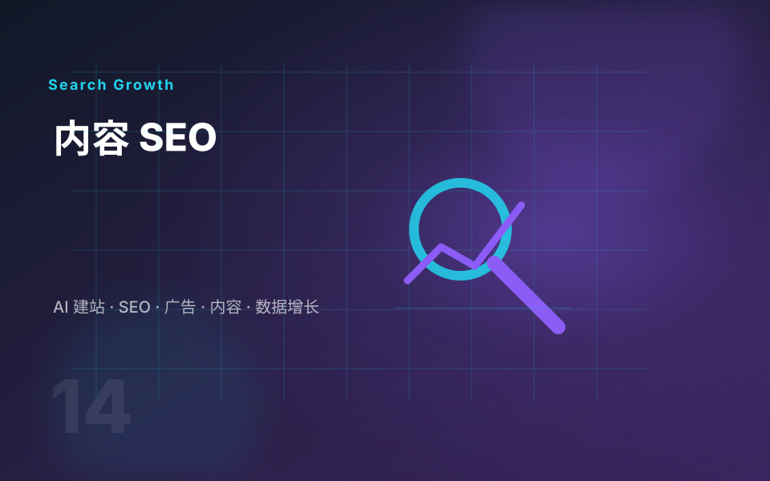

搜索意图匹配
区分信息型、商业调查型和采购型关键词，让文章、产品页和方案页各自承担正确任务。
Backlinko 对 on-page SEO 的核心判断是：页面既要让人读得懂，也要让搜索和 AI 系统能理解、引用和推荐。外贸内容更要把买家问题、产品卖点和询盘路径连接起来。
区分信息型、商业调查型和采购型关键词，让文章、产品页和方案页各自承担正确任务。
用支柱页覆盖大主题，再用多篇长尾文章覆盖细分问题，靠内部链接建立主题权威。
用清晰标题、短段落、列表、表格、FAQ 和图片说明提升阅读体验，也方便 AI 摘要提取。

如果内容无法帮助客户判断产品、能力、价格、交期和风险，它就很难转化为询盘。内容 SEO 应该围绕真实采购路径展开。
解释产品选择、参数、认证、应用场景和常见误区，覆盖信息型搜索。
对比材料、型号、工艺、方案和替代品，承接商业调查型搜索。
把产品放进客户行业和使用场景里，展示你理解客户业务。
用问答和项目项目经验解决信任问题，减少重复沟通，推动咨询。
这些链接用于说明方法来源。实际落地时，我会结合你的网站结构、行业关键词、产品资料和目标市场重新拆解。
单独优化某一个点很难长期有效。建议先处理技术基础，再用内容集群承接关键词，最后用高质量引用和品牌曝光提升可信度。
告诉我你的产品、目标市场和现有内容，我会帮你判断哪些页面该做支柱页，哪些主题适合做长尾文章。